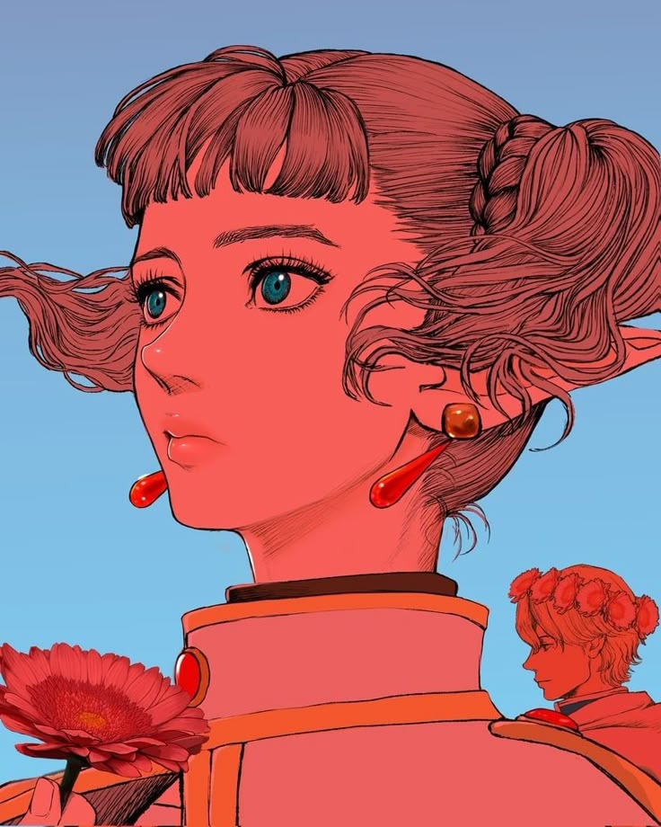
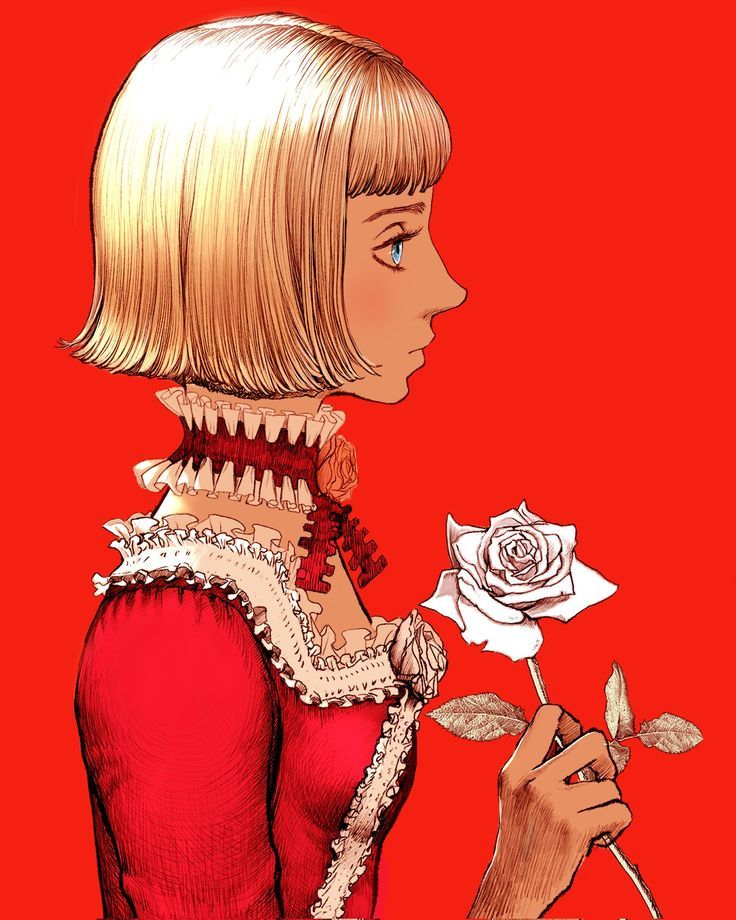

Designe com CSS

Farnese
Farnese de Vandimion é uma nobre da poderosa família Vandimion e líder da Santa Iron Chain Knights. Inicialmente, ela é guiada por fanatismo religioso, repressão emocional e medo do desconhecido. Sua personalidade rígida e autoritária esconde inseguranças profundas e desejos reprimidos. Ao conhecer Guts e acompanhar sua jornada, Farnese começa a questionar suas crenças e seu papel no mundo. Longe da influência da igreja, ela passa por uma transformação marcante, buscando liberdade e autoconhecimento. Torna-se aprendiz de magia e cuidadora de Casca, revelando um lado compassivo e determinado. Sua evolução simboliza a luta entre fé, razão e identidade. Farnese é um dos arcos de crescimento mais ricos e humanos em Berserk.

Casca
Farnese de Vandimion é uma nobre da poderosa família Vandimion e líder da Santa Iron Chain Knights. Inicialmente, ela é guiada por fanatismo religioso, repressão emocional e medo do desconhecido. Sua personalidade rígida e autoritária esconde inseguranças profundas e desejos reprimidos. Ao conhecer Guts e acompanhar sua jornada, Farnese começa a questionar suas crenças e seu papel no mundo. Longe da influência da igreja, ela passa por uma transformação marcante, buscando liberdade e autoconhecimento. Torna-se aprendiz de magia e cuidadora de Casca, revelando um lado compassivo e determinado. Sua evolução simboliza a luta entre fé, razão e identidade. Farnese é um dos arcos de crescimento mais ricos e humanos em Berserk.